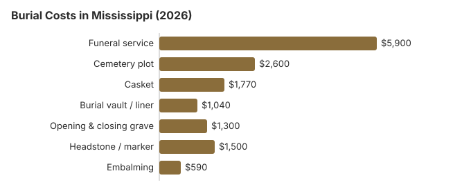

Burial Costs in Mississippi (2026)
A Mississippi burial is several bills, not one: the funeral home, the cemetery, the monument company and usually a few fees on top. Together they come to $13,110 to $17,610 by our estimate, and the casket and the cemetery decide most of the spread. Mississippi also gives families only 48 hours before a body must be buried, embalmed or refrigerated, which affects the price. Here is how each part adds up.
What a Mississippi Burial Costs, Item by Item
| Line item | Mississippi estimate | Range |
|---|---|---|
| Funeral service | $5,900 | $4,425 – $7,670 |
| Cemetery plot | $2,600 | $1,300 – $5,200 |
| Casket | $1,770 | $590 – $4,720 |
| Burial vault / liner | $1,040 | $800 – $10,000 |
| Opening & closing grave | $1,300 | $500 – $3,000 |
| Headstone / marker | $1,500 | $500 – $5,000+ |
| Embalming | $590 | $500 – $1,500 |
How to use these figures: they are Mississippi estimates from our model, not prices gathered from providers, and not a quote from anyone. Our our method is explained on the index page, and our disclaimer.

Counting the cemetery's fees with the funeral home's, a Mississippi burial comes to $13,110 to $17,610 in our estimates.
Burial Options for Mississippi Families
Saving on a Mississippi Burial
Some ways Mississippi families keep the bill down:
- Ask for itemized prices. A Mississippi funeral home has to give you its General Price List. Cemeteries do not, but most will itemize on request rather than quoting a bundle.
- Consider a church or family cemetery. Rural Mississippi has plenty of them, and a plot there commonly runs 30 to 50% below what a memorial park charges.
- Ask about veterans' sections. Many Mississippi counties keep veterans' sections in local cemeteries, separate from the national cemeteries.
Church Cemeteries and Plot Prices in Mississippi
Across much of Mississippi, church and family cemeteries still operate beside commercial ones, and congregations often price their sections below the market. Using a church or family plot can save more than $1,040 against a private cemetery, by our estimate. When you call, ask whether the cemetery is open only to members of the congregation or to families with plots already there, and whether it allows an outside monument company to set the headstone.
Burial Resources
- Funeral Consumers AllianceNonprofit consumer advocacy for funeral pricing
- Headstone & Monument GuideCosts, types, and buying tips
- Green Burial OptionsEco-friendly and natural alternatives
- Best Online Casket RetailersCaskets bought online often cost less
- Best Burial InsuranceCompare plans to cover burial expenses
Compare Funeral Costs
- Average Funeral Cost in 2026National cost breakdown with real prices
- Cremation vs. Burial Cost ComparisonSide-by-side price comparison to help you decide
- Funeral Cost BreakdownEvery line item explained: know what you're paying for
- Cheapest Funeral OptionsLower-cost alternatives, with typical price ranges
- Direct Cremation: Most Affordable OptionNFDA 2023 median $2,645 with a family-supplied container (latest available)
- How to Compare Funeral PricesStep-by-step guide to getting the best price
You can buy the casket and the marker yourself. Typical prices are in our online casket retailer guide and headstone cost guide; the payment assistance guide lists programs that may help in Mississippi.
Frequently Asked Questions
What is the cost of a burial in Mississippi?
By our estimate the funeral home's service is about $5,900 and a plot about $2,600. Add a vault ($1,040), opening and closing ($1,300), a casket ($1,770) and a headstone ($500 to $5,000), and a Mississippi burial totals $13,110 to $17,610.
Does Mississippi require a burial vault?
Not under state law. The Mississippi State Department of Health's rules say the state requires no embalming, casket or vault (15 Miss. Admin. Code Pt. 5, R. 4.6.3), so a vault is needed only when the cemetery's own rules call for one.
Where a cemetery does require an outer container, ask whether a cheaper liner satisfies it and whether you may buy it elsewhere. The FTC Funeral Rule bars a funeral home from saying a vault is required by law when it is only the cemetery's rule (16 CFR 453.3(c)).
How do Mississippi families lower burial costs?
Direct, or immediate, burial leaves out embalming, the viewing and a funeral home ceremony, which usually makes it the cheapest burial on a Mississippi price list. You can also supply your own casket, and the FTC Funeral Rule forbids a handling fee for doing so. An eligible veteran can be buried in a VA national cemetery with the grave, opening and closing, liner and marker all free.
How should I compare Mississippi cemeteries?
Collect written prices from two or more cemeteries for the plot, the opening and closing and any vault or liner they require. Church and town cemeteries may limit who can be buried there, so ask about eligibility too.
Mississippi perpetual-care cemeteries register yearly with the Secretary of State's Regulation and Enforcement Division, which also takes complaints about preneed cemetery contracts. A problem with a funeral home or crematory goes to the State Board of Funeral Service instead.
What does a Mississippi burial cost with everything included?
With everything included, a Mississippi burial is $13,110 to $17,610: funeral service about $5,900, plot about $2,600, casket about $1,770, vault about $1,040, opening and closing about $1,300 and a headstone at $500 to $5,000.
Can a Mississippi burial be green?
Some Mississippi cemeteries do offer green sections, with a biodegradable container, no embalming and no vault, usually for less than a conventional burial. Where none is nearby, a family can ask for a regular plot without embalming. Keep the 48-hour rule in mind, since without embalming the body must be refrigerated if the burial is later.
More for Mississippi
Mississippi's 48-hour burial rule
Mississippi puts a firm clock on burial. A body must be buried, cremated or otherwise disposed of within 48 hours of death unless a licensed embalmer has embalmed it or it is kept refrigerated. If the body is being moved and cannot reach its destination within 24 hours of death, it must likewise be embalmed or refrigerated (15 Miss. Code R. 5-85-4.6.3; checked October 29, 2026).
In practice this is why a funeral home's price list for a Mississippi burial usually shows embalming or a refrigeration charge whenever the service is more than two days out. A family planning a later graveside service can ask which of the two the funeral home will use and what each costs per day.
Who oversees Mississippi burials, and where to find help
The Mississippi State Board of Funeral Service licenses funeral homes and takes license questions and complaints at 601-932-1973. Perpetual-care cemeteries answer to the Secretary of State's Regulation and Enforcement Division instead.
No funeral director is required in Mississippi, according to the Funeral Consumers Alliance, whose list of nine such states leaves it out; families may arrange the grave, its opening and the burial container with the cemetery themselves. Every burial needs a disposition permit. If the family switches to cremation, there is no fixed wait, though a permit is required (15 Miss. Admin. Code Pt. 5, R. 4.7.2).
County burial for those who cannot pay
Mississippi law makes the county board of supervisors responsible for burying paupers who die in the county, and the board can find a person a pauper from public-assistance records even after death (Miss. Code Ann. § 43-31-29). (Source: Miss. Code Ann. § 43-31-29.) The $255 Social Security payment to a spouse or child falls far short of the $2,600 plot estimate on this page.
Veterans can be buried free in a national cemetery, with the plot and marker included. Mississippi has Biloxi National Cemetery (228-388-6668), Corinth National Cemetery (901-386-8311) and Natchez National Cemetery (601-445-4981), and state veterans cemeteries at Kilmichael (662-262-4232) and Newton (601-683-2959) (source: VA National Cemetery Administration).
What to do next in Mississippi
- Get the funeral home's price list and the cemetery's price sheet before agreeing to anything.
- If the service is more than two days away, ask whether embalming or refrigeration will be used and what each costs per day.
- For a county burial, bring proof of public assistance to the board of supervisors.
- Ask Biloxi National Cemetery about a veteran's eligibility before buying a private plot.
- Call the Board at 601-932-1973 if a funeral home misleads you about burial prices.